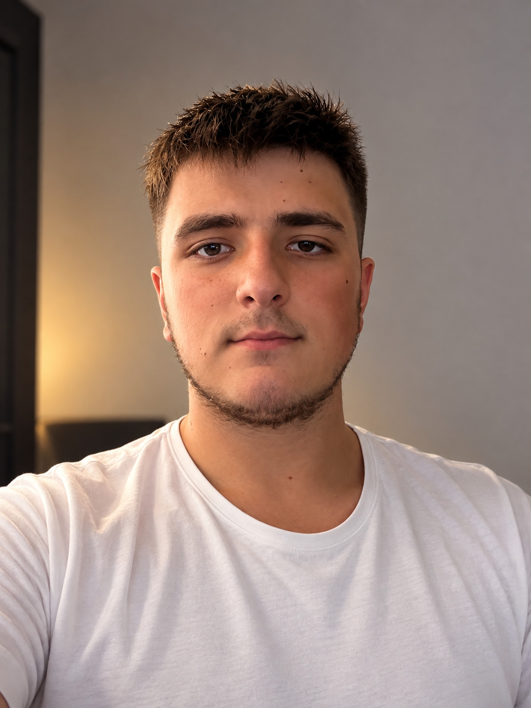

Junio 2026 — Agosto 2026
Montaje de aire acondicionado
Montaje e instalación de equipos de aire acondicionado y realización de tubulatura para las instalaciones.
Persona responsable, polivalente y con ganas de trabajar, con experiencia en atención al cliente, caja, inventario y trabajos de apoyo en fontanería y obra. Me adapto rápidamente a nuevos entornos y tareas.

Persona responsable, con ganas de aprender y trabajar. Me adapto rápidamente a diferentes tareas y entornos y busco seguir desarrollando mis conocimientos y experiencia profesional.
Soy una persona responsable, trabajadora y polivalente. Me adapto rápidamente a diferentes entornos y tareas, tengo ganas de aprender y me gusta trabajar en equipo. Cuento con experiencia en atención al cliente, caja, gestión de inventario y trabajos de apoyo en fontanería y obra.
Busco una oportunidad laboral en la que pueda aportar mis conocimientos, aprender nuevas habilidades y seguir creciendo profesionalmente.
Montaje e instalación de equipos de aire acondicionado y realización de tubulatura para las instalaciones.
Huggers. Atención al cliente, manejo de caja, apoyo en cocina y control y organización de productos e inventario.
Apoyo en trabajos de fontanería y obra, preparación de materiales, utilización de herramientas y maquinaria auxiliar y colaboración con el equipo.
Educación Secundaria Obligatoria (ESO).
Formación y acreditación para el manejo de carretillas elevadoras.
Nativo
Nativo
B1
Disponible para nuevas oportunidades laborales.